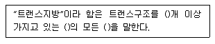
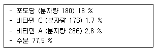
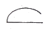
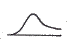
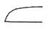
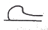
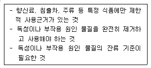
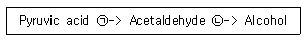

식품기사 (2017-03-05 기출문제)
1과목: 식품위생학
1. 식품 등의 표시 기준 상의 트랜스지방 정의를 나타낸 것으로 ()안에 들어갈 용어를 순서대로 알맞게 나열한 것은?

- 1 - 비공액형 - 불포화지방
- 1 - 비공액형 - 포화지방
- 2 - 공액형 - 불포화지방
- 2 - 공액형 - 포화지방
(정답률: 83%)

2. 합성수지제 식기를 60℃의 더운 물로 처리해서 용출 시험을 한 결과, 아세틸아세톤 시약에 의해 녹황색이 나타났을 때 추정할 수 있는 함유 물질은?
- methanol
- formaldehyde
- Ag
- phenol
(정답률: 85%)
3. 식품첨가물 사용방법에 대한 설명으로 틀린 것은?
- 식품의 성질과 제조 방법을 고려하여 적합한 첨가물을 선택한다.
- 어떤 식품이나 관계없이 첨가물의 사용은 법정허용량 만큼을 사용한다.
- 식품첨가물공전 총칙에 의해 도량형은 미터법을 따른다.
- 식품의 유통조건(온도, 빛, 등)을 고려하여 첨가물의 효과를 과신하지 말아야 한다.
(정답률: 87%)
4. 식빵의 부패 현상인 점조현상(ropiness) 원인균으로 다음 중 어느 것이 가장 많이 나타나는가?
- Asp. glaucus
- Asp. niger
- Bac. cereus
- Bac. mesentericus
(정답률: 50%)
5. 주요 용도가 산도조절제가 아닌 것은?
- sorbic acid
- lactic acid
- acetic acid
- citric acid
(정답률: 65%)
6. 기구 및 용기, 포장의 일반 기준으로 옳은 것은?
- 전분, 글리세린, 왁스 등 식용 물질이 식품과 접촉하는 면에 접착되어 있는 용기, 포장에 대해서는 총 용출량의 규격 적용을 아니 할 수 있다.
- 기구 및 용기, 포장의 식품과 접촉하는 부분에 사용하는 도금용 주석은 납을 1% 이상 함유하여서는 아니 된다.
- 식품의 용기, 포장을 회수하여 재사용하고자 할 때에는 먹는 물 관리법의 수질 기준에 적합한 물로 깨끗이 세척하고 즉시 사용한다.
- 검체 채취 시 상자 등에 넣어 유통되는 기구 및 용기, 포장은 반드시 개봉하여 채취한다.
(정답률: 49%)
7. 석탄산계수에 대한 설명으로 옳은 것은?
- 소독제의 무게를 석탄산 분자량으로 나눈 값이다.
- 소독제의 독성을 석탄산의 독성 1000으로 하여 비교한 값이다.
- 각종 미생물을 사멸시키는데 필요한 석탄산의 농도 값이다.
- 석탄산과 동일한 살균력을 보이는 소독제의 희석도를 석탄산의 희석도로 나눈 값이다.
(정답률: 85%)
8. 바이러스성 식중독의 병원체가 아닌 것은?
- EHEC 바이러스
- 로타바이러스A군
- 아스트로바이러스
- 장관 아데노바이러스
(정답률: 75%)
9. 구제역에 대한 설명으로 틀린 것은?
- 병인체는 작은 RNA 바이러스이다.
- 공기를 통한 전파는 이루어지지 않는다.
- 바이러스의 생존 기간은 온도, 습도, pH, 자외선 등에 영향을 받는다.
- 감염은 일반적으로 감염된 동물의 이동에 의해 이루어진다.
(정답률: 85%)
10. 다음 중 식품 영업에 종사할 수 있는 질병은?
- A형 감염
- 피부병 또는 그 밖의 화농성 질환
- 장티푸스
- B형 간염
(정답률: 74%)
11. 식품의 안전성과 수분활성도 (Aw)에 관한 설명으로 틀린 것은?
- 비효소적 갈변 : 다분자수분층보다 낮은 Aw에서는 발생하기 어렵다.
- 효소 활성 : Aw가 높을 때가 낮을 때보다 활발하다.
- 미생물의 성장 : 보통 세균 증식에 필요한 Aw는 0.91 정도이다.
- 유지의 산화 반응 : Aw가 0.5~0.7 이면 반응이 일어나지 않는다.
(정답률: 73%)
12. 다음 중 허용 살균제 또는 표백제가 아닌 것은?
- 고도표백분
- 차아염소산나트륨
- 무수아황산
- 옥시스테아린
(정답률: 62%)
13. 일반적으로 독성이 강해 급성독성을 일으키며 식물체의 표면에서 광선이나 자외선에 의해 분해되기 쉽고, 식물체 내에서도 효소적으로 분해되며 비교적 잔류기간이 짧은 유기 농약은?
- 유기염소제
- 유기수은제
- 유기인제
- 유기비소제
(정답률: 78%)
14. 유전자변형식품 등의 표시 기준에 의하여 농산물을 생산, 수입, 유통 등 취급 과정에서 구분하여 관리한 경우에도 그 속에 유전자변형농산물이 비의도적으로 혼입될 수 있는 비율을 의미하는 용어와 그 허용 비율의 연결이 옳은 것은?
- 비의도적 혼입치 - 5%
- 비의도적 혼입치 - 3%
- 관리 이탈 혼입치 - 5%
- 관리 이탈 혼입치 - 3%
(정답률: 73%)
15. 카드뮴에 의하여 발생되는 병은?
- 브루셀라병
- 미나마타병
- 이타이이타이병
- 탄저병
(정답률: 88%)
16. 안전성에 문제가 될 가능성이 있는 식품 중 기준(국내 및 국제)이 설정되어 있는 방사선 핵종이 아닌 것은?
- 90Sr
- 131I
- 12C
- 137Cs
(정답률: 88%)
17. 페놀수지, 요소수지, 멜라닌수지와 같은 열경화성 합성수지의 제조 시 가열, 가압조건이 부족할 때 반응이 되지 않고 유리되어 용출될 수 있는 것은?
- 착색제
- 가소제
- 산화방지제
- 포름알데히드
(정답률: 84%)
18. 식품의 현실적인 위해 요인과 잠재 위해 요인을 발굴하고 평가하는 일련의 과정으로, HACCP 수립의 7원칙 중 제 1원칙에 해당하는 단계는?
- 위해요소분석
- 중요관리점
- 허용한도
- 모니터링 방법 결정
(정답률: 90%)
19. 식품별 회수, 판매중지 사유가 아닌 것은?
- 과실주 : potassium aluminium silicate 사용
- 떡 제조용 팥 앙금 : 소브산칼슘 0.5g/kg 검출
- 냉동닭고기 : 니트로푸란계 대사물질 SEM 10 ug/kg 검출
- 오이피클 : 세균발육 양성
(정답률: 70%)
20. 파상열에 대한 설명으로 틀린 것은?
- 건조 시 저항력이 강하다.
- 특이한 발열이 주기적으로 반복된다.
- Brucella 속이 원인균이다.
- 원인균은 열에 대한 저항성이 강하다.
(정답률: 70%)
2과목: 식품화학
21. 35%의 HCl을 희석하여 10% HCl 500 ml를 제조하고자 할 때 필요한 증류수의 양은 약 얼마인가??
- 143 mL
- 234 mL
- 187 mL
- 357 mL
(정답률: 58%)
22. 메밀전분을 갈아서 만든 유동성이 있는 액체성 물질을 가열하고 난 뒤 냉각하였더니 반고체 상태 (묵)가 되었다. 이 묵의 교질상태는?
- gel
- sol
- 염석
- 유화
(정답률: 87%)
23. 1 M NaCl, 0.5 M KCl, 0.25 M HCl이 준비되어 있다. 최종 농도 0.1 M NaCl, 0.1 M KCl, 0.1 M HCl 혼합수용액 1000 mL 제조하고자 할 때 각각 첨가되어야 할 시약의 부피는 얼마인가?
- 1 M NaCl 용액 50 mL, 0.5 M KCl 용액 100 mL, 0.25 M HCl 용액 200 mL 첨가 후 물 650 mL를 첨가한다.
- 1 M NaCl 용액 75 mL, 0.5 M KCl 용액 150 mL, 0.25 M HCl 용액 300 mL 첨가 후 물 475 mL를 첨가한다.
- 1 M NaCl 용액 100 mL, 0.5 M KCl 용액 200 mL, 0.25 M HCl 용액 400 mL 첨가 후 물 300 mL를 첨가한다.
- 1 M NaCl 용액 125 mL, 0.5 M KCl 용액 250 mL, 0.25 M HCl 용액 500 mL 첨가 후 물 120 mL를 첨가한다.
(정답률: 74%)
24. 유지 산패측정 방법 중 시료를 65℃에 저장하면서 정기적으로 관능검사나 과산화물가를 측정하여 유지의 산패도를 측정하는 방법은?
- 샬오븐시험법
- 랜시매트법
- 활성산소법
- 카보닐 화합물의 측정
(정답률: 63%)
25. 단백질을 물에 녹일 때 사용하는 염의 농도가 일정 수준 이상인 경우 단백질이 침전되는 현상은?
- 염용 (salting in)
- syneresis 현상
- 염석 (salting out)
- hysteresis 현상
(정답률: 76%)
26. 다음 중 우리 몸에 흡수된 단백질 분해하는 효소의 작용순서로 옳은 것은?
- endopeptidase-exopeptidase-dipeptidase
- exopeptidase-endopeptidase-dipeptidase
- endopeptidase-dipeptidase-exopeptidase
- exopeptidase-dipeptidase-endopeptidase
(정답률: 66%)
27. 다음 중 젤(gel) 상태의 식품이 아닌 것은?
- 양갱
- 치즈
- 두부
- 마요네즈
(정답률: 81%)
28. 선식 제품과 같은 분말 제품의 경우 용해도가 낮아서 소비자들이 식용하고자 녹일 때 잘 용해되지 않는다. 이를 개선하고자 할 때 어떤 방법이 가장 바람직한가?
- 분무 건조를 시켜 용해도를 증가시킨다.
- 분무 건조기를 이용하여 엉김현상 (agglo meration)을 유도한다.
- 유화제 및 물성 개량제를 첨가한다.
- 습윤 조절제 및 연화 방지제를 첨가한다.
(정답률: 68%)
29. 셀러리의 독특한 주요 향기 성분은?
- limonene
- sedanolide
- methyl cinnamate
- 2,6-nonadienal
(정답률: 76%)
30. 관능검사에 대한 설명 중 틀린 것은?
- 관능검사는 식품의 특성이 시각, 후각, 미각, 촉각 및 청각으로 감지되는 반응을 측정, 분석, 해석한다.
- 관능검사 패널의 종류는 차이식별 패널, 특성 묘사 패널, 기호조사 패널 등으로 나뉜다.
- 특성묘사 패널은 재현성 있는 측정 결과를 발생시키도록 적절히 훈련되어야 한다.
- 보통 특성묘사 패널의 수가 가장 많고 기호조사 패널의 수가 가장 적게 필요하다.
(정답률: 85%)
31. 당근에서 카로티노이드를 분석하는 방법에 대한 설명으로 틀린 것은?
- 카로티노이드는 빛에 의해 쉽게 분해되므로 암소에서 실험을 진행한다.
- 당근 시료에서 카로티노이드를 분리하기 위해 수용액 상에서 끓여 용출시킨다.
- 카로티노이드는 산소에 의해 쉽게 산화되므로 질소가스를 공급한다.
- 분리된 카로티노이드는 보통 역상 HPLC 또는 분광광도계를 활용하여 정량한다.
(정답률: 79%)
32. 유지의 굴절률에 대한 설명으로 옳은 것은?
- 불포화도와 굴절률은 상관관계가 없다.
- 불포화도가 클수록 굴절률은 감소한다.
- 분자량과 굴절률은 상관관계가 없다.
- 분자량이 클수록 굴절률은 증가한다.
(정답률: 75%)
33. 관능검사 중 묘사분석법의 종류가 아닌 것은?
- 향미프로필
- 텍스처 프로필
- 질적 묘사분석
- 정량 묘사분석
(정답률: 61%)
34. 우유의 응고에 관계하는 금속 이온?
- Mg2+
- Mn2+
- Ca2+
- Cu2+
(정답률: 69%)
35. 삶은 달걀의 난황 주위가 청록색으로 변색되는 주요 원인은?
- 비타민 C가 산화되어 노른자의 철 (Fe)과 결합하기 때문
- 열에 의하여 타닌 (tannin)이 분해되어 철 (Fe)이 형성되기 때문
- 달걀 흰자의 황화수소 (H2S)가 노른자의 철 (Fe)과 결합하여 황화철 (FeS)을 생성하기 때문
- 단백질의 구성성분인 질소가 산화되기 때문
(정답률: 86%)
36. 단백질 중 달걀 단백질이 아닌 것은?
- 오발부민(ovalbumin)과 콘알부민 (conalbu min)
- 콘알부민 (conalbumin)과 라이조자임 (lyso zyme)
- 라이조자임 (lysozyme)과 아비딘 (avidin)
- 글라이시닌 (glycinin)과 락토페린 (lacto ferrin)
(정답률: 79%)
37. Aspergillus 속 배양물에서 얻을 수 있는 효소로, 식물세포막 구성 성분 사이의 결합을 분리 또는 약화시켜 식물조직을 연화시키는 작용을 하는 것은?
- pepsin
- pectinase
- isoamylase
- a-amylase
(정답률: 69%)
38. 단당류의 수산기 (-OH기) 1개에서 산소가 제거된 당유도체 형태는?
- 당알코올
- 데옥시당
- 아미노당
- 우론산
(정답률: 65%)
39. 다음과 같은 배합비를 가진 식품의 수분활성도는 약 얼마인가?

- 0.89
- 0.91
- 0.93
- 0.98
(정답률: 46%)
40. 변향의 발생 가장 적은 식용유는?
- 옥수수기름
- 대두유
- 해바라기기름
- 아마인유
(정답률: 65%)
3과목: 식품가공학
41. 소시지, 햄 등의 가공품이 가열 처리 후에도 갈색으로 잘 변하지 않는 주된 이유는?
- 축산 가공품 제조 시 사용되는 인산염의 작용에 의해 nitrosometmyoglobin으로 전환되기 때문이다.
- myoglobin 등의 성분이 아질산염 또는 질산염과 반응하여 nitrosomyoglobin으로 전환되기 때문이다.
- 훈연과정 중에 훈연성분과 반응하여 선홍색이 생성되기 때문이다.
- 근육성분이 myoglobin이 가열과정 중에 변색하여 melanoidin 색소를 만들기 때문이다.
(정답률: 81%)
42. D값의 설명으로 옳은 것은?
- 주어진 미생물을 일정 온도에서 100 % 사멸시키는 데 필요한 가열시간이다.
- 주어진 미생물을 일정 온도에서 90 % 사멸시키는 데 필요한 가열시간이다.
- 주어진 미생물을 일정 온도에서 50 % 사멸시키는 데 필요한 가열시간이다.
- 주어진 미생물을 일정 온도에서 10 % 사멸시키는 데 필요한 가열시간이다.
(정답률: 83%)
43. 제면 제로에서 소금을 사용하는 목적이 아닌 것은?
- 미생물에 의한 발효를 촉진하기 위해서
- 밀가루의 점탄성을 높이기 위해서
- 수분의 내부 확산하는 것을 촉진하기 위해서
- 제품의 품질을 안정시키기 위해서
(정답률: 64%)
44. 금속평판으로부터의 열플럭스 속도는 1000 W/m2이다. 평판의 표면온도는 120℃이며, 주위온도는 20℃이다. 대류열전달계수는?
- 50 W/m2
- 30 W/m2
- 10 W/m2
- 5 W/m2
(정답률: 57%)
45. 버터 제조 시 가장 적당한 churning의 온도와 시간은?
- 10~15 ℃, 60분
- 15~20 ℃, 40분
- 25~30 ℃, 20분
- 30~35 ℃, 10분
(정답률: 54%)
46. 템페 (tempeh)에 대한 설명으로 틀린 것은?
- Bacillus natto에 의하여 만들어진다.
- 인도네시아의 전통 발효식품으로 시작되었다.
- 전통적인 방법으로는 증자한 콩을 바나나 잎에 포장하여 2~3일 발효시켜 얻는다.
- Rhizopus 속의 곰팡이에 의하여 만들어진다.
(정답률: 66%)
47. 유지제조 공정 중 윈터링 (wintering)의 주된 목적은?
- 유리 지방산 제거
- 탈색
- 왁스 (wax)분 제거
- 탈취
(정답률: 62%)
48. 미강유의 정제 방법과 관계 없는 것은?
- 탈산
- 탈납
- 탈취
- 탈수
(정답률: 72%)
49. 유청(Whey)의 주성분은?
- 유당 (Lactose)
- 지방 (Fat)
- 젖산 (Lactic acid)
- 탈수 (Protein)
(정답률: 79%)
50. 다음 패리노그래프 중 강력분을 나타내는 것은?




(정답률: 70%)
51. 통조림의 뚜껑에 있는 익스팬션 링의 주 역할은?
- 상하의 구별을 쉽게 하기 위함이다.
- 충격에 견딜 수 있게 하기 위함이다.
- 밀봉 시 관통과의 결합을 쉽게 하기 위함이다.
- 내압의 완충 작용을 하기 위함이다.
(정답률: 78%)
52. 피단(pidan)의 설명으로 옳은 것은?
- 달걀을 삶아서 난각을 제거하고 조미액에 담가서 맛이 든 다음 훈연시켜 저장성이 우수하고 풍미가 양호한 제품이다.
- 달걀을 껍질째로 NaOH, 식염의 수용액에 넣어, 알칼리 성분을 달걀 속으로 서서히 침입시켜 난단백을 응고시킨 제품이다.
- 달걀을 물에 끓여 둔부를 깨어 스푼이 들어갈 만큼 난각을 벗기고 식염, 후추를 뿌려 만든다.
- 달걀을 염지액에 담근 후 한번 끓이고 냉각시켜 만든다.
(정답률: 83%)
53. 다음 중 수산발효식품이 아닌 것은?
- 젓갈
- 어간장
- 수리미 (surimi)
- 가자미식해
(정답률: 79%)
54. 유연포장재료를 사용하며 135℃ 정도에서 가열하여도 견뎌 내는 포장방법으로 통조림 포장을 대신하여 사용되는 유연포장 살균식품은?
- 병조림 식품
- 레토르트파우치 식품
- 플라스틱포장 식품
- 종이팩포장 식품
(정답률: 84%)
55. 된장 숙성에 대한 설명으로 틀린 것은?
- 탄수화물은 아밀라아제의 당화작용으로 단맛이 생성된다.
- 당분은 효모의 알코올 발효로 알코올 등의 방향 물질이 생성된다.
- 단백질은 프로테아제에 의하여 아미노산으로 분해되어 구수한 맛이 생성된다.
- 적정숙성조건은 60~65℃에서 3~5시간이다.
(정답률: 74%)
56. Flat sour 현상에 대한 설명으로 틀린 것은?
- 채소 통조림에 흔히 볼 수 있다.
- 내용물이 팽창되지 않아 외관상으로는 변패의 구분이 어렵다.
- 내용물에서 신맛이 난다.
- 미생물 번식에 의한 것이 아니다.
(정답률: 77%)
57. 식육의 사후경직과 숙성에 대한 설명으로 틀린 것은?
- 사후 경직 - 도살 후 시간이 경과함에 따라 근육이 굳어지는 현상
- 식육 냉동 - 사후경직 억제
- 식육 숙성 - 육의 연화과정, 보수력 증가
- 숙성 속도 - 온도가 높으면 신속
(정답률: 63%)
58. 젤리(jelly)의 강도에 영향을 미치는 요인이 아닌 것은?
- pectin의 농도
- pectin의 분자량
- pectin의 ester화 정도
- pectin의 결합도
(정답률: 42%)
59. 아래의 구분에 해당하는 식품 원료는?

- 느타리버섯
- 헛개나무(줄기)
- 은행나무(잎)
- 가시여지(열매)
(정답률: 66%)
60. 밀가루의 제빵 특성에 영향을 주는 가장 중요한 품질 요인은?
- 회분 함량
- 색깔
- 단백질 함량
- 당 함량
(정답률: 72%)
4과목: 식품미생물학
61. EMB (Eosin Methylene Blue) 한천 배지에서 배양한 대장균 집락의 형상은?
- 황색 불투명 집락
- 금속성 광택을 가진 흑녹색 집락
- 흑색 환을 가진 녹회색 집락
- 불투명 환을 가진 검정색 집락
(정답률: 70%)
62. 미생물 증식과 pH에 관한 설명으로 옳은 것은?
- 일반적으로 곰팡이는 알칼리성에서 잘 증식한다.
- 일반적으로 효모는 약산성에서 증식이 억제된다.
- 일반적으로 세균은 중성 또는 약알칼리성에서 잘 증식한다.
- 미생물 증식은 pH에 의해 영향을 받지 않는다.
(정답률: 71%)
63. 포도 과피에 존재하여 포도주의 자연 발효 시 이용되는 균주는?
- Saccharomyces coreanus
- Zygosaccharomyces rouxii
- Saccharomyces carlsbergensis
- Saccharomyces cerevisiae var. ellipsoideus
(정답률: 73%)
64. 효모의 Neuberg 제 1발효 형식에서 에틸알코올 이외에 생성하는 물질은?
- CO2
- H2O
- C3H5(OH)3
- CH3CHO
(정답률: 74%)
65. 효모의 형태에 관한 설명으로 옳은 것은?
- 효모는 배지조성, pH, 배양 방법 등과는 관계없이 항상 일정한 형태로 나타난다.
- 효모의 영양번식 방법으로는 출아법, 분열법 및 출아 분열법이 있다.
- 일반적으로 효모 세포의 크기는 구균 형태의 세균보다 작다.
- 효모는 곰팡이와는 달리 위균사나 진균사를 형성하지 않는다.
(정답률: 67%)
66. 진핵세포의 소기관 중 호흡작용과 산화적 인산화에 의해 에너지를 생산하는 역할을 하는 기관은?
- 미토콘드리아
- 골지체
- 편모
- 리보솜
(정답률: 84%)
67. 아래의 알코올 발효과정의 일부 반응에서 ㉠, ㉡에 관여되는 보효소를 순서대로 나열한 것은?

- TPP, NAD
- NADP, NAD
- TPP, FAD
- NADP, FAD
(정답률: 60%)
68. 광합성 무기영양균 (photolithotroph)의 특성이 아닌 것은?
- 에너지원을 빛에서 얻는다.
- 탄소원을 이산화탄소로부터 얻는다.
- 녹색황세균과 홍색황세균이 이에 속한다.
- 모두 호기성균이다.
(정답률: 78%)
69. 원핵세포에 있는 구조는?
- 핵
- 리보솜
- 미토콘드리아
- 엽록체
(정답률: 53%)
70. 세균의 증식에 대한 설명으로 틀린 것은?
- 세균을 액체배지에 접종하여 배양시간에 따른 세포수의 변화를 그래프로 나타내면 S자형으로 나타난다.
- 유도기에는 세포수의 증가는 거의 없고 세포의 대사활동이 활발하게 일어나는 시기이다.
- 세포수 및 2차 대사산물의 생산량이 최대로 나타나는 시기는 대수기이다.
- 세포의 생리적 활성이 가장 강한 시기는 대수기이다.
(정답률: 53%)
71. 일반적인 간장이나 된장의 숙성에 관여하는 내삼투압성 효모의 증식 가능한 최저 수분활성도?
- 0.95
- 0.88
- 0.80
- 0.60
(정답률: 69%)
72. 미생물의 세포막을 구성하는 주요 물질은?
- 인지질
- 지질다당류
- 다당류
- 펩티도글리칸
(정답률: 64%)
73. 조류 (Algae)에 대한 설명으로 옳은 것은?
- 홍조류는 엽록체가 있어 광합성 작용을 한다.
- 남조류는 진핵생물에 속한다.
- 클로렐라 (chlorella)는 단세포 갈조류의 일종이다.
- 우뭇가사리, 김은 갈조류에 속한다.
(정답률: 56%)
74. 남조류에 대한 설명으로 틀린 것은?
- 이분열에 의한 무성생식으로만 증식한다.
- 다시마, 미역, 톳 등이 이에 속한다.
- 담수나 토양 중에 분포하고 특징적인 활주운동을 한다.
- 단세포 조류로서 세포 안에 핵과 액포가 없다.
(정답률: 57%)
75. 균사에 격벽(격막)이 있는 곰팡이는?
- Mucor mucedo
- Rhizopus delemar
- Absidia lichtheimi
- Aspergillus oryzae
(정답률: 54%)
76. 산막효모의 특징이 아닌 것은?
- 산소를 요구한다.
- 산화력이 강하다.
- 발효액의 내부에서 발육한다.
- 피막을 형성한다.
(정답률: 77%)
77. 하면발효 효모의 특징으로 옳은 것은?
- 소적배양으로 효모를 발효시키며 액중에 쉽게 분산된다.
- 균체가 균막을 형성한다.
- 발효작용이 빠르다.
- Raffinose, melibiose를 발효한다.
(정답률: 54%)
78. 최초 세균수는 a이고 한번 분열하는데 3시간이 걸리는 세균이 있다. 최적의 증식조건에서 30시간 배양 후 총균수는?
- a×330
- a×210
- a×530
- a×25
(정답률: 81%)
79. 다음 중 진균류의 무성포자의 것은?
- 접합포자 (zygospore)
- 포자낭포자 (sporangiospore)
- 자낭포자 (ascospore)
- 담자포자 (basidiospore)
(정답률: 69%)
80. 미생물과 그 이용에 대한 설명의 연결이 잘못된 것은?
- Bacillus subtilis - 단백분해력이 강하여 메주에서 번식한다.
- Aspergillus oryzae - amylase와 protease 활성이 강하여 코지 (koji)균으로 사용된다.
- Propionibacterium shermanii - 치즈눈을 형성시키고, 독특한 풍미를 내기 위하여 스위스 치즈에 사용된다.
- Kluyveromyces lactis - 내염성이 강한 효모로 간장의 후숙에 중요하다.
(정답률: 64%)
5과목: 생화학 및 발효학
81. 등전점보다 낮은 pH에서 아미노산이 갖는 전하량은 무엇인가?
- (+) 전하
- (-) 전하
- (0) 전하
- 양쪽성 전하
(정답률: 67%)
82. 퓨린계 뉴클레오티드 (purine nucleotide)의 대사 이상으로 인하여 관절이나 신장 등의 조직에 침범하여 통풍 (gout)을 일으키는 원인 물질로 알려진 것은?
- Allopurinol
- Colchicine
- Uric acid
- Guanosine monophosphate
(정답률: 76%)
83. 간에서 프로트롬빈을 비롯한 여러 가지 혈액 응고인자를 합성하고 정상수준을 유지하기 위해 필요한 비타민은?
- 비타민 A
- 비타민 D
- 비타민 E
- 비타민 K
(정답률: 78%)
84. DNA를 구성하는 염기가 아닌 것은?
- 아데닌
- 우라실
- 구아닌
- 시토신
(정답률: 78%)
85. 발효장치로 미생물 배양 중 생성되는 거품을 제거하기 위한 가장 효과적인 방법은?
- 소포제 첨가 장치만으로 충분히 제어한다.
- Foam breaker를 상부에 부착하여 발생 시 파쇄시킨다.
- 다공성 물질인 활성탄소나 규조토를 즉시 살포한다.
- 소포제 첨가 장치와 foam breaker를 병행하여 사용한다.
(정답률: 77%)
86. 산화에 의한 생체막의 손상을 억제하며, 대표적인 항산화제로 이용되는 비타민은?
- 비타민 A
- 비타민 B
- 비타민 D
- 비타민 E
(정답률: 78%)
87. Neuberg의 제2발효형식은?
- C6H12O6 -> 2 ethanol + 2CO2
- C6H12O6 -> glycerol + acetaldehyde + CO2
- 2C6H12O6 -> 2 glycerol + acetic acid + ethanol + 2CO2
- C6H12O6 -> 2 lactic acid
(정답률: 57%)
88. 미생물 배양방법에 관한 설명으로 틀린 것은?
- 장류 등의 코지(koji) 생산에는 주로 고체배양 (soild culture)을 한다.
- 심부배양(submerged culture)은 일종의 고체배양이다.
- 유가배양(fed-batch culture)은 기질의 용해도가 낮을 때 사용한다.
- 표면배양(surface culture)은 산소를 미생물에 용이하게 공급하는 호기적 정치배양의 한 방법이다.
(정답률: 53%)
89. 오탄당 인산경로(pentose phosphate pathway)의 중요한 생리적 의미는?
- 알코올 대사를 촉진시킨다.
- 저혈당과 피로회복시에 도움을 준다.
- 조직내로의 혈당 침투를 촉진시킨다.
- 지방산과 스테로이드 합성에 이용되는 NADPH를 생산한다.
(정답률: 71%)
90. 원핵세포에 해당하는 생물은?
- 식물
- 곰팡이
- 효모
- 세균
(정답률: 70%)
91. DNA의 재조합 과정을 위해 사용되는 제한효소인 endonuclease가 아닌 것은?
- EcoRI
- HindII
- HindIII
- SalPIV
(정답률: 70%)
92. Cyclic AMP의 생리적 기능으로 옳은 것은?
- 조효소
- 핵산의 구성성분
- 고에너지 화합물
- 호르몬 작용의 전달물질
(정답률: 49%)
93. 맥주 제조 시 맥아의 효소에 의해 전분과 단백질이 분해되는 공정은?
- 맥아즙 제조공정
- 주발효 공정
- 녹맥아 제조공정
- 후발효 공정
(정답률: 60%)
94. 탄화수소를 탄소원으로 한 균체생산의 특징이 아닌 것은?
- 높은 통기조건이 필요하다.
- 발효열을 냉각하기 위한 냉각 장치가 필요하다.
- 당질에 비해 균체 생산 속도가 빠르다.
- 높은 교반조건이 필요하다.
(정답률: 52%)
95. 코리회로(Cori cycle)를 통해 혈액으로 이동되는 물질은 무엇인가?
- Lactate
- Pyruvate
- Citrate
- Acetate
(정답률: 48%)
96. Sucrose가 가수분해될 때 생성되는 단당류는?
- 포도당과 포도당
- 과당과 과당
- 포도당과 과당
- 포도당과 갈락토오스
(정답률: 80%)
97. 진핵세포에 대한 설명으로 틀린 것은?
- 내부에는 막으로 둘러싸인 소기관이 존재한다.
- 세포분열이 일어날 때 유사분열과 감수분열이 관찰된다.
- DNA는 히스톤(histone)과 복합체를 만들지 않고 존재한다.
- 전자전달계 등의 호흡효소계가 미토콘드리아에 존재한다.
(정답률: 74%)
98. TCA 회로에 관여하는 조절효소가 아닌 것은?
- Citrate synthase
- Isocitrate dehydrogenase
- a-Ketoglutarate dehydrogenase
- Phosphoglucomutase
(정답률: 62%)
99. 어떤 DNA 사슬 단편의 질소염기별 농도가 A=991개, G=456개일 때, G+C에 해당되는 질소염기의 개수는?
- 912
- 1447
- 1535
- 1982
(정답률: 73%)
100. 곰팡이 protease의 성질에 관한 설명으로 틀린 것은?
- Aspergillus oryzae에서는 배지의 pH에 따라 산성 protease나 알칼리성 protease를 생성한다.
- Aspergillus niger에 주로 알칼리성 protease를 생성한다.
- Aspergillus oryzae의 쌀 Koji에서는 산성 protease를 생성한다.
- Aspergillus oryzae의 밀기울 Koji 또는 콩 Koji에서는 중성 및 알칼리성 protease를 생성한다.
(정답률: 46%)